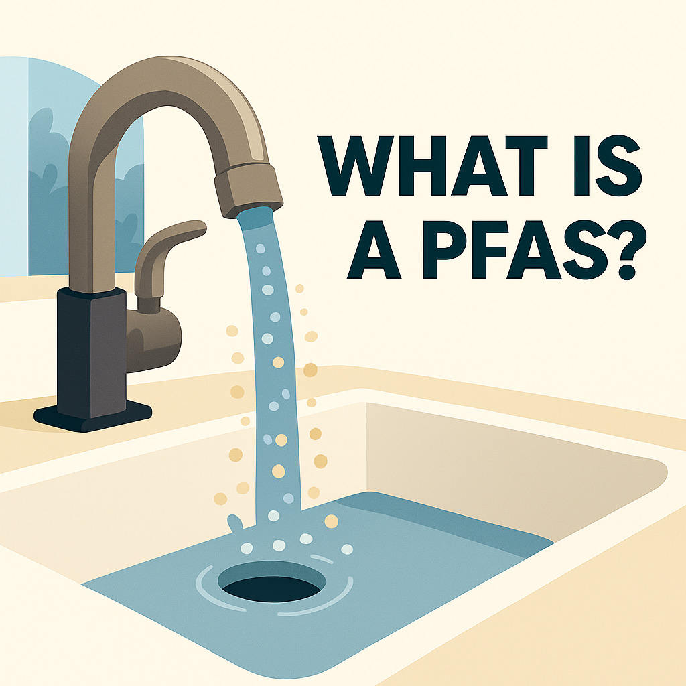

What is PFAS?
PFAS, often called “forever chemicals,” are persistent substances found in everyday products and the environment, raising growing concerns about health and safety.
PFAS, often called “forever chemicals,” are persistent substances found in everyday products and the environment, raising growing concerns about health and safety.
The Safe Drinking Water Act (SDWA) is the primary law that protects public drinking water in the United States. It sets standards for
water quality, requires regular testing, and regulates how public water systems treat and manage drinking water. The act also authorizes
the EPA to oversee states and water suppliers to ensure water remains safe. You can access the full document using the link provided
below.
These water issues are not just national concerns—they are actively affecting
communities such as Brunswick County, North Carolina. Recent testing has
shown that portions of the county’s drinking water contain elevated levels of
PFAS, including compounds that are not yet fully regulated at the federal
level. Local utilities are working to upgrade their treatment systems, including
the addition of advanced filtration technologies, to reduce these “forever
chemicals” and meet new safety guidelines. The county’s population growth
has also placed additional pressure on water supply and infrastructure,
leading to seasonal conservation alerts and a greater reliance on treatment
facilities to ensure safe &reliable water to the people.
Robeson County faces its own water-quality challenges, many of which are
linked to PFAS contamination. Recent testing has identified elevated PFAS
levels in parts of the county’s water system and in areas near landfills and
industrial sites. The region’s frequent flooding and extensive agricultural
activity also make it especially vulnerable to runoff, allowing fertilizers, waste,
and other pollutants to enter nearby waterways. Combined with aging
infrastructure in some communities, these factors underscore the importance
of reliable water testing and strong treatment practices to ensure long-term
water safety.